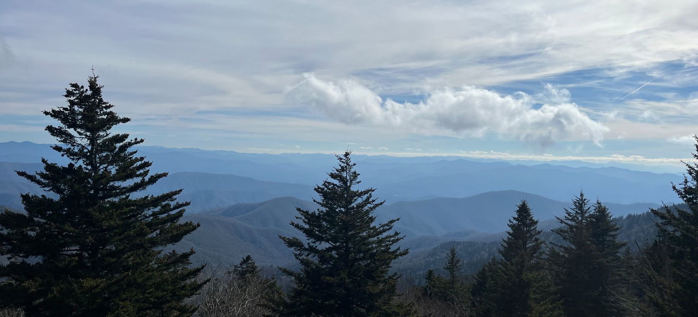

Bryce Wade, PhD
I use a diverse set of tools including genomics, geospatial modeling, and simulations to guide conservation decisions.

I use a diverse set of tools including genomics, geospatial modeling, and simulations to guide conservation decisions.

 Contact
Contact